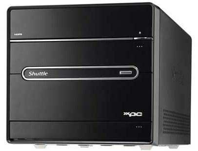

COMPUTER FUNDAMENTALS

A computer is a machine that can be instructed to carry out sequences of arithmetic or logical operations automatically via computer programming. Modern computers have the ability to follow generalized sets of operations, called programs. These programs enable computers to perform an extremely wide range of tasks. A "complete" computer including the hardware, the operating system (main software), and peripheral equipment required and used for "full" operation can be referred to as a computer system. This term may as well be used for a group of computers that are connected and work together, in particular a computer network or computer cluster.
Computers are used as control systems for a wide variety of industrial and consumer devices. This includes simple special purpose devices like microwave ovens and remote controls, factory devices such as industrial robots and computer-aided design, and also general purpose devices like personal computers and mobile devices such as smart phones. The Internet is run on computers and it connects hundreds of millions of other computers and their users. Early computers were only conceived as calculating devices. Since ancient times, simple manual devices like the abacus aided people in doing calculations. Early in the Industrial Revolution, some mechanical devices were built to automate long tedious tasks, such as guiding patterns for looms. More sophisticated electrical machines did specialized analog calculations in the early 20th century. The first digital electronic calculating machines were developed during World War II. The first semiconductor transistors in the late 1940s were followed by the silicon-based MOSFET (MOS transistor) and monolithic integrated circuit (IC) chip technologies in the late 1950s, leading to the microprocessor and the microcomputer revolution in the 1970s. The speed, power and versatility of computers have been increasing dramatically ever since then, with MOS transistor counts increasing at a rapid pace (as predicted by Moore's law), leading to the Digital Revolution during the late 20th to early 21st centuries.
Conventionally, a modern computer consists of at least one processing element, typically a central processing unit (CPU) in the form of a metal-oxide-semiconductor (MOS) microprocessor, along with some type of computer memory, typically MOS semiconductor memory chips. The processing element carries out arithmetic and logical operations, and a sequencing and control unit can change the order of operations in response to stored information. Peripheral devices include input devices (keyboards, mice, joystick, etc.), output devices (monitor screens, printers, etc.), and input/output devices that perform both functions (e.g., the 2000s-era touchscreen). Peripheral devices allow information to be retrieved from an external source and they enable the result of operations to be saved and retrieved.
A computer is an electronic machine that accepts data, stores and processes data into information. The computer is able to work because there are instructions in its memory directing it.
The parts of the computer that you can see and touch, such as the keyboard, monitor and the mouse are called hardware. The instructions that direct the computer are called software or computer program.
Data which is raw facts that you the user enter into the computer is called input. This includes; words, numbers, sound and pictures. When the data is entered into the computer, the computer processes the data to produce information which is output. For example, you enter 2+2 into the computer as data, the computer processes it and the result is 4 which is information.
Computers can be broadly classified by their speed and computing power.
| Sl.No. | Type | Specifications |
| 1 | PC (Personal Computer) | It is a single user computer system having moderately powerful microprocessor |
| 2 | Workstation | It is also a single user computer system, similar to personal computer however has a more powerful microprocessor. |
| 3 | Mini Computer | It is a multi-user computer system, capable of supporting hundreds of users simultaneously. |
| 4 | Main Frame | It is a multi-user computer system, capable of supporting hundreds of users simultaneously. Software technology is different from minicomputer. |
| 5 | Supercomputer | It is an extremely fast computer, which can execute hundreds of millions of instructions per second. |
Personal Computer (PC)
This is the computer that most people use in their daily lives. This computer is much smaller, less powerful and less expensive than the supercomputer and the mainframe computer. There are two main types of personal computers. Macintosh (Macs) and the PC compatibles (PC). The main differences between the two are the operating systems and the processor they use. This category of computer has two additional types of computers. These are mobile computer and handheld computer. The most popular type of mobile computer is the notebook or laptop computer, and the handheld computer is a very small PC that you can hold in your hand.
It is important to note that, any computer; regardless of its size has an input device, output device and a system unit.
A PC can be defined as a small, relatively inexpensive computer designed for an individual user. PCs are based on the microprocessor technology that enables manufacturers to put an entire CPU on one chip. Businesses use personal computers for word processing, accounting, desktop publishing, and for running spreadsheet and database management applications. At home, the most popular use for personal computers is playing games and surfing the Internet.
Although personal computers are designed as single-user systems, these systems are normally linked together to form a network. In terms of power, now-a-days high-end models of the Macintosh and PC offer the same computing power and graphics capability as low-end workstations by Sun Microsystems, Hewlett-Packard, and Dell.

Workstation
Workstation is a computer used for engineering applications (CAD/CAM), desktop publishing, software development, and other such types of applications which require a moderate amount of computing power and relatively high quality graphics capabilities. Workstations generally come with a large, high-resolution graphics screen, large amount of RAM, inbuilt network support, and a graphical user interface. Most workstations also have mass storage device such as a disk drive, but a special type of workstation, called diskless workstation, comes without a disk drive. Common operating systems for workstations are UNIX and Windows NT. Like PC, workstations are also single-user computers like PC but are typically linked together to form a local-area network, although they can also be used as stand-alone systems.

Minicomputer
It is a midsize multi-processing system capable of supporting up to 250 users simultaneously.

Mainframe Computer
Mainframe is very large in size and is an expensive computer capable of supporting hundreds or even thousands of users simultaneously. Mainframe executes many programs concurrently and supports many simultaneous execution of programs.

Super Computer
Supercomputers are one of the fastest computers currently
available. Supercomputers are very expensive and are employed for
specialized applications that require immense amount of
mathematical calculations (number crunching).
For example,
weather forecasting, scientific simulations, (animated) graphics,
fluid dynamic calculations, nuclear energy research, electronic
design, and analysis of geological data (e.g. in petrochemical
prospecting).